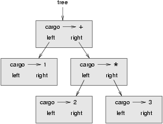
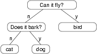

Like linked lists, trees are made up of nodes. A common kind of tree is a
binary tree, in which each node contains a reference to two
other nodes (possibly None). These references are referred to as
the left and right subtrees. Like list nodes, tree nodes also contain cargo.
A state diagram for a tree looks like this:
To avoid cluttering up the picture, we often omit the Nones.
The top of the tree (the node tree refers to) is called the
root. In keeping with the tree metaphor, the other nodes are
called branches and the nodes at the tips with null references are called
leaves. It may seem odd that we draw the picture with the
root at the top and the leaves at the bottom, but that is not the strangest
thing.
To make things worse, computer scientists mix in another metaphor---the family tree. The top node is sometimes called a parent and the nodes it refers to are its children. Nodes with the same parent are called siblings.
Finally, there is a geometric vocabulary for talking about trees. We
already mentioned left and right, but there is also up
(toward the
parent/root) and down
(toward the children/leaves). Also, all of the
nodes that are the same distance from the root comprise a
level of the tree.
We probably don't need three metaphors for talking about trees, but there they are.
Like linked lists, trees are recursive data structures because they are defined recursively.
A tree is either:
- the empty tree, represented by
None, or- a node that contains an object reference (cargo) and two tree references.
20.1 Building trees
The process of assembling a tree is similar to the process of assembling a linked list. Each constructor invocation builds a single node.
class Tree: def __init__(self, cargo, left=None, right=None): self.cargo = cargo self.left = left self.right = right def __str__(self): return str(self.cargo)
The cargo can be any type, but the left and
right parameters should be tree nodes. left and
right are optional; the default value is None.
To print a node, we just print the cargo.
One way to build a tree is from the bottom up. Allocate the child nodes first:
left = Tree(2) right = Tree(3)
Then create the parent node and link it to the children:
tree = Tree(1, left, right);
We can write this code more concisely by nesting constructor invocations:
>>> tree = Tree(1, Tree(2), Tree(3))
Either way, the result is the tree at the beginning of the chapter.
20.2 Traversing trees
Any time you see a new data structure, your first question should be,
How do I traverse it?
The most natural way to traverse a tree is
recursively. For example, if the tree contains integers as cargo, this
function returns their sum:
def total(tree): if tree == None: return 0 return total(tree.left) + total(tree.right) + tree.cargo
The base case is the empty tree, which contains no cargo, so the sum is 0. The recursive step makes two recursive calls to find the sum of the child trees. When the recursive calls complete, we add the cargo of the parent and return the total.
20.3 Expression trees
A tree is a natural way to represent the structure of an expression. Unlike
other notations, it can represent the computation unambiguously. For example,
the infix expression 1 + 2 * 3 is ambiguous unless we know that
the multiplication happens before the addition.
This expression tree represents the same computation:
The nodes of an expression tree can be operands like 1 and
2 or operators like + and *. Operands
are leaf nodes; operator nodes contain references to their operands. (All of
these operators are binary, meaning they have exactly two
operands.)
We can build this tree like this:
>>> tree = Tree('+', Tree(1), Tree('*', Tree(2), Tree(3)))
Looking at the figure, there is no question what the order of operations is; the multiplication happens first in order to compute the second operand of the addition.
Expression trees have many uses. The example in this chapter uses trees to translate expressions to postfix, prefix, and infix. Similar trees are used inside compilers to parse, optimize, and translate programs.
20.4 Tree traversal
We can traverse an expression tree and print the contents like this:
def printTree(tree): if tree == None: return print tree.cargo, printTree(tree.left) printTree(tree.right)
In other words, to print a tree, first print the contents of the root, then print the entire left subtree, and then print the entire right subtree. This way of traversing a tree is called a preorder, because the contents of the root appear before the contents of the children. For the previous example, the output is:
>>> tree = Tree('+', Tree(1), Tree('*', Tree(2), Tree(3))) >>> printTree(tree) + 1 * 2 3
This format is different from both postfix and infix; it is another notation called prefix, in which the operators appear before their operands.
You might suspect that if you traverse the tree in a different order, you will get the expression in a different notation. For example, if you print the subtrees first and then the root node, you get:
def printTreePostorder(tree): if tree == None: return printTreePostorder(tree.left) printTreePostorder(tree.right) print tree.cargo,
The result, 1 2 3 * +, is in postfix! This order of traversal
is called postorder.
Finally, to traverse a tree inorder, you print the left tree, then the root, and then the right tree:
def printTreeInorder(tree): if tree == None: return printTreeInorder(tree.left) print tree.cargo, printTreeInorder(tree.right)
The result is 1 + 2 * 3, which is the expression in infix.
To be fair, we should point out that we have omitted an important complication. Sometimes when we write an expression in infix, we have to use parentheses to preserve the order of operations. So an inorder traversal is not quite sufficient to generate an infix expression.
Nevertheless, with a few improvements, the expression tree and the three recursive traversals provide a general way to translate expressions from one format to another.
If we do an inorder traversal and keep track of what level in the tree we are on, we can generate a graphical representation of a tree:
def printTreeIndented(tree, level=0): if tree == None: return printTreeIndented(tree.right, level+1) print ' '*level + str(tree.cargo) printTreeIndented(tree.left, level+1)
The parameter level keeps track of where we are in the tree. By
default, it is initially 0. Each time we make a recursive call, we pass
level+1 because the child's level is always one greater than the
parent's. Each item is indented by two spaces per level. The result for the
example tree is:
>>> printTreeIndented(tree)
3
*
2
+
1
If you look at the output sideways, you see a simplified version of the original figure.
20.5 Building an expression tree
In this section, we parse infix expressions and build the corresponding
expression trees. For example, the expression (3+7)*9 yields the
following tree:
Notice that we have simplified the diagram by leaving out the names of the attributes.
The parser we will write handles expressions that include numbers,
parentheses, and the operators + and *. We assume
that the input string has already been tokenized into a Python list (producing
this list is left as an exercise). The token list for
(3+7)*9 is:
['(', 3, '+', 7, ')', '*', 9, 'end']
The end token is useful for preventing the parser from reading
past the end of the list.
The first function we'll write is getToken, which takes a token
list and an expected token as parameters. It compares the expected token to the
first token on the list: if they match, it removes the token from the list and
returns True; otherwise, it returns False:
def getToken(tokenList, expected): if tokenList[0] == expected: del tokenList[0] return True else: return False
Since tokenList refers to a mutable object, the changes made
here are visible to any other variable that refers to the same object.
The next function, getNumber, handles operands. If the next
token in tokenList is a number, getNumber removes it
and returns a leaf node containing the number; otherwise, it returns
None.
def getNumber(tokenList): x = tokenList[0] if type(x) != type(0): return None del tokenList[0] return Tree (x, None, None)
Before continuing, we should test getNumber in isolation. We
assign a list of numbers to tokenList, extract the first, print
the result, and print what remains of the token list:
>>> tokenList = [9, 11, 'end'] >>> x = getNumber(tokenList) >>> printTreePostorder(x) 9 >>> print tokenList [11, 'end']
The next method we need is getProduct, which builds an
expression tree for products. A simple product has two numbers as operands,
like 3 * 7.
Here is a version of getProduct that handles simple products.
def getProduct(tokenList): a = getNumber(tokenList) if getToken(tokenList, '*'): b = getNumber(tokenList) return Tree ('*', a, b) else: return a
Assuming that getNumber succeeds and returns a singleton tree,
we assign the first operand to a. If the next character is
*, we get the second number and build an expression tree with
a, b, and the operator.
If the next character is anything else, then we just return the leaf node
with a. Here are two examples:
>>> tokenList = [9, '*', 11, 'end'] >>> tree = getProduct(tokenList) >>> printTreePostorder(tree) 9 11 *
>>> tokenList = [9, '+', 11, 'end'] >>> tree = getProduct(tokenList) >>> printTreePostorder(tree) 9
The second example implies that we consider a single operand to be a kind of
product. This definition of product
is counterintuitive, but it turns
out to be useful.
Now we have to deal with compound products, like like
3 * 5 * 13. We treat this expression as a product of products,
namely 3 * (5 * 13). The resulting tree is:
With a small change in getProduct, we can handle an arbitrarily
long product:
def getProduct(tokenList): a = getNumber(tokenList) if getToken(tokenList, '*'): b = getProduct(tokenList) # this line changed return Tree ('*', a, b) else: return a
In other words, a product can be either a singleton or a tree with
* at the root, a number on the left, and a product on the right.
This kind of recursive definition should be starting to feel familiar.
Let's test the new version with a compound product:
>>> tokenList = [2, '*', 3, '*', 5 , '*', 7, 'end'] >>> tree = getProduct(tokenList) >>> printTreePostorder(tree) 2 3 5 7 * * *
Next we will add the ability to parse sums. Again, we use a slightly
counterintuitive definition of sum.
For us, a sum can be a tree with
+ at the root, a product on the left, and a sum on the right.
Or, a sum can be just a product.
If you are willing to play along with this definition, it has a nice property: we can represent any expression (without parentheses) as a sum of products. This property is the basis of our parsing algorithm.
getSum tries to build a tree with a product on the left and a
sum on the right. But if it doesn't find a +, it just builds a
product.
def getSum(tokenList): a = getProduct(tokenList) if getToken(tokenList, '+'): b = getSum(tokenList) return Tree ('+', a, b) else: return a
Let's test it with 9 * 11 + 5 * 7:
>>> tokenList = [9, '*', 11, '+', 5, '*', 7, 'end'] >>> tree = getSum(tokenList) >>> printTreePostorder(tree) 9 11 * 5 7 * +
We are almost done, but we still have to handle parentheses. Anywhere in an
expression where there can be a number, there can also be an entire sum
enclosed in parentheses. We just need to modify getNumber to
handle subexpressions:
def getNumber(tokenList): if getToken(tokenList, '('): x = getSum(tokenList) # get the subexpression getToken(tokenList, ')') # remove the closing parenthesis return x else: x = tokenList[0] if type(x) != type(0): return None tokenList[0:1] = [] return Tree (x, None, None)
Let's test this code with 9 * (11 + 5) * 7:
>>> tokenList = [9, '*', '(', 11, '+', 5, ')', '*', 7, 'end']
>>> tree = getSum(tokenList)
>>> printTreePostorder(tree)
9 11 5 + 7 * *
The parser handled the parentheses correctly; the addition happens before the multiplication.
In the final version of the program, it would be a good idea to give
getNumber a name more descriptive of its new role.
20.6 Handling errors
Throughout the parser, we've been assuming that expressions are well-formed. For example, when we reach the end of a subexpression, we assume that the next character is a close parenthesis. If there is an error and the next character is something else, we should deal with it.
def getNumber(tokenList): if getToken(tokenList, '('): x = getSum(tokenList) if not getToken(tokenList, ')'): raise 'BadExpressionError', 'missing parenthesis' return x else: # the rest of the function omitted
The raise statement creates an exception; in this case we
create a new kind of exception, called a BadExpressionError. If
the function that called getNumber, or one of the other functions
in the traceback, handles the exception, then the program can continue.
Otherwise, Python will print an error message and quit.
20.7 The animal tree
In this section, we develop a small program that uses a tree to represent a knowledge base.
The program interacts with the user to create a tree of questions and animal names. Here is a sample run:
Are you thinking of an animal? y Is it a bird? n What is the animals name? dog What question would distinguish a dog from a bird? Can it fly If the animal were dog the answer would be? n Are you thinking of an animal? y Can it fly? n Is it a dog? n What is the animals name? cat What question would distinguish a cat from a dog? Does it bark If the animal were cat the answer would be? n Are you thinking of an animal? y Can it fly? n Does it bark? y Is it a dog? y I rule! Are you thinking of an animal? n
Here is the tree this dialog builds:
At the beginning of each round, the program starts at the top of the tree and asks the first question. Depending on the answer, it moves to the left or right child and continues until it gets to a leaf node. At that point, it makes a guess. If the guess is not correct, it asks the user for the name of the new animal and a question that distinguishes the (bad) guess from the new animal. Then it adds a node to the tree with the new question and the new animal.
Here is the code:
def yes(ques): ans = raw_input(ques).lower() return ans[0] == 'y' def animal(): # start with a singleton root = Tree("bird") # loop until the user quits while True: print if not yes("Are you thinking of an animal? "): break # walk the tree tree = root while tree.left != None: prompt = tree.cargo + "? " if yes(prompt): tree = tree.right else: tree = tree.left # make a guess guess = tree.cargo prompt = "Is it a " + guess + "? " if yes(prompt): print "I rule!" continue # get new information prompt = "What is the animal's name? " animal = raw_input(prompt) prompt = "What question would distinguish a %s from a %s? " question = raw_input(prompt % (animal, guess)) # add new information to the tree tree.cargo = question prompt = "If the animal were %s the answer would be? " if yes(prompt % animal): tree.left = Tree(guess) tree.right = Tree(animal) else: tree.left = Tree(animal) tree.right = Tree(guess)
The function yes is a helper; it prints a prompt and then
takes input from the user. If the response begins with y or
Y, the function returns True.
The condition of the outer loop of animal is True,
which means it will continue until the break statement executes,
if the user is not thinking of an animal.
The inner while loop walks the tree from top to bottom, guided
by the user's responses.
When a new node is added to the tree, the new question replaces the cargo, and the two children are the new animal and the original cargo.
One shortcoming of the program is that when it exits, it forgets everything you carefully taught it! Fixing this problem is left as an exercise.
20.8 Glossary
- binary tree:
- A tree in which each node refers to zero, one, or two dependent nodes.
- root:
- The topmost node in a tree, with no parent.
- leaf:
- A bottom-most node in a tree, with no children.
- parent:
- The node that refers to a given node.
- child:
- One of the nodes referred to by a node.
- siblings:
- Nodes that share a common parent.
- level:
- The set of nodes equidistant from the root.
- binary operator:
- An operator that takes two operands.
- subexpression:
- An expression in parentheses that acts as a single operand in a larger expression.
- preorder:
- A way to traverse a tree, visiting each node before its children.
- prefix notation:
- A way of writing a mathematical expression with each operator appearing before its operands.
- postorder:
- A way to traverse a tree, visiting the children of each node before the node itself.
- inorder:
- A way to traverse a tree, visiting the left subtree, then the root, and then the right subtree.
20.9 Exercises
- Modify
printTreeInorderso that it puts parentheses around every operator and pair of operands. Is the output correct and unambiguous? Are the parentheses always necessary? - Write a function that takes an expression string and returns a token list.
- Find other places in the expression tree functions where errors can occur and add appropriate
raisestatements. Test your code with improperly formed expressions. - Think of various ways you might save the animal knowledge tree in a file. Implement the one you think is easiest.